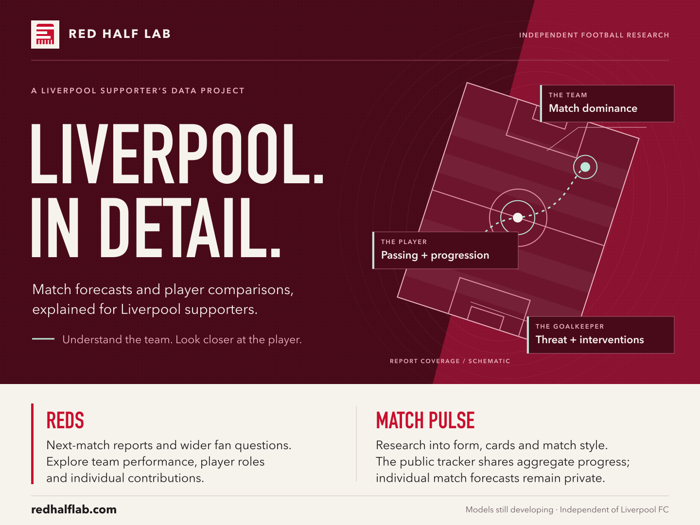

View full-size cardTHE PROJECT
Liverpool, in detail.
A supporter’s project to help fans understand Liverpool through data.

English caption
Red Half Lab is a Liverpool supporter’s data project. REDS explores the next league match, player roles and contributions. Match Pulse tracks separate research into form, cards and match style. Discover the project: https://redhalflab.com/